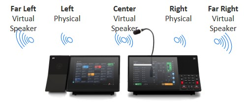

기본적인 모든 딜러폰의 기능 제공(ARD, Hoot, barge in, conference, TV audio, etc.)
금융권의 Global 보안 Regulation 모두 준수(802.1x,SSH(secure shell), SSIP,(secure SIP) SRTP, MySQL, TLS(Transport Layer security),SSL(secure socket layer) v3등)
터치화면에 물리적인 보턴이 동시 지원
32 channel speaker 모두 한 화면에 표시
Speaker solo 기능은 다른 스피커 소리를 자동으로 줄여 중요한 통화에 집중
마이크에 빨간 LED 표시로 마이크 on/off 여부 표시
최대 5개의 사용자 화면 구성 저장
딜러폰에서 단축다이얼, 즐겨찾기, speaker channel, directory 등을 사용자가 직관적으로 생성 편집
Speaker channel 통화의 직전 20초 대화를 딜러폰에서 바로 재생(직관적인 분쟁 해결)
고객사의 구별을 위해 Speaker channel를 위한 가상 서라운드 오디오 5 채널 (가장 왼쪽, 왼쪽, 가운데, 오른쪽, 가장 오른쪽. 스피커 추가시)
사내 UC(Unified communication)인 메신저 연동과 수신콜에 대해 고객사 정보를 PC에 자동 PoP up할 수 있는 API 인 Bluewave 옵션 지원
10개 이상의 다양한 언어 제공
딜러폰의 자유로운 이동 사용을 위해 ID/Password 로 login 하는 모바일 오피스
스크린 확장을 위한 확장 모니터
자리 비움시 딜러폰 자동 잠금 등
녹취 및 딜러폰 상태 정보를 자동으로 check 및 정상 유무를 담당자에게 주기적으로 Reporting(옵션)
